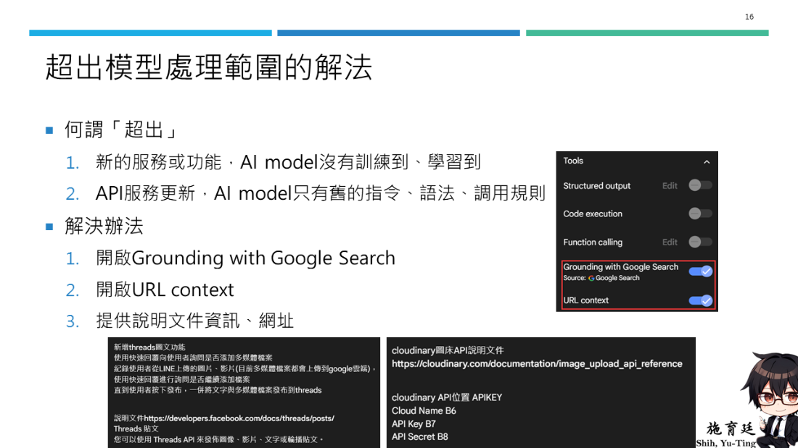
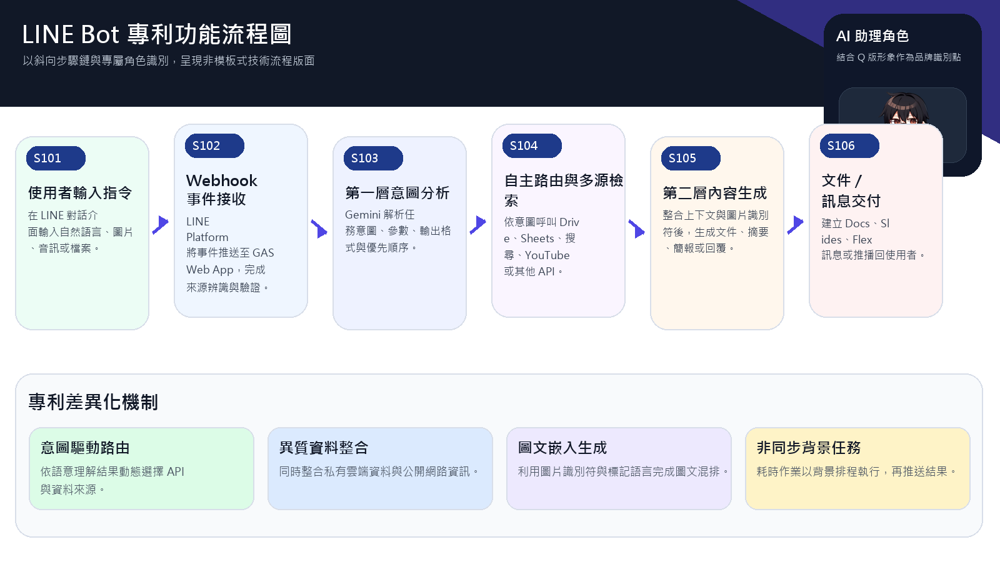
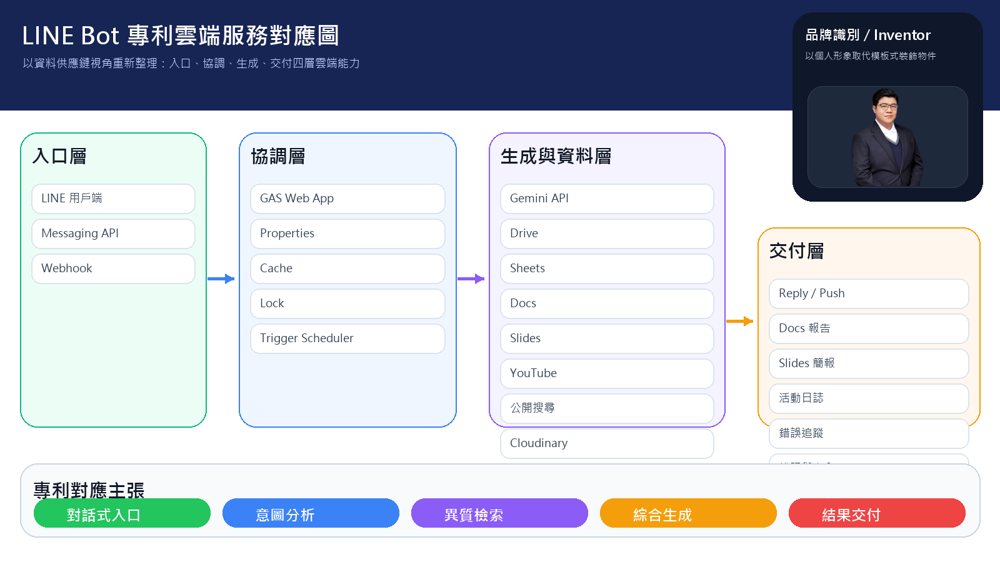

What to do when the model lacks the right context

The materials make a strong point: when services change, APIs evolve, or the model has not seen the feature before, the answer is not to guess harder. It is to add grounding, URL context, or the official documentation and exact storage locations.
Documentation as a design input
One of the key lessons in this course is that good context matters more than long prompts. When integrating Threads, Cloudinary, or any other external service, the developer should provide the official docs, key storage locations, and expected output shape.
Using the patent folder as an advanced supplement

The workflow diagram helps explain validation, routing, and response packaging.

The cloud service view helps learners move from tool lists toward system architecture thinking.
The patent-oriented figures show a larger design frame: user interaction, LINE platform, backend orchestration, AI and data layers, outputs, and the governance layer required for real operations.
Governance and security reminders
- Never hard-code secrets into public code or screenshots.
- Separate testing and production storage whenever possible.
- If the system handles student, administrative, or research data, discuss retention and access policies explicitly.
- AI-generated outputs still require human review and exception tracking.